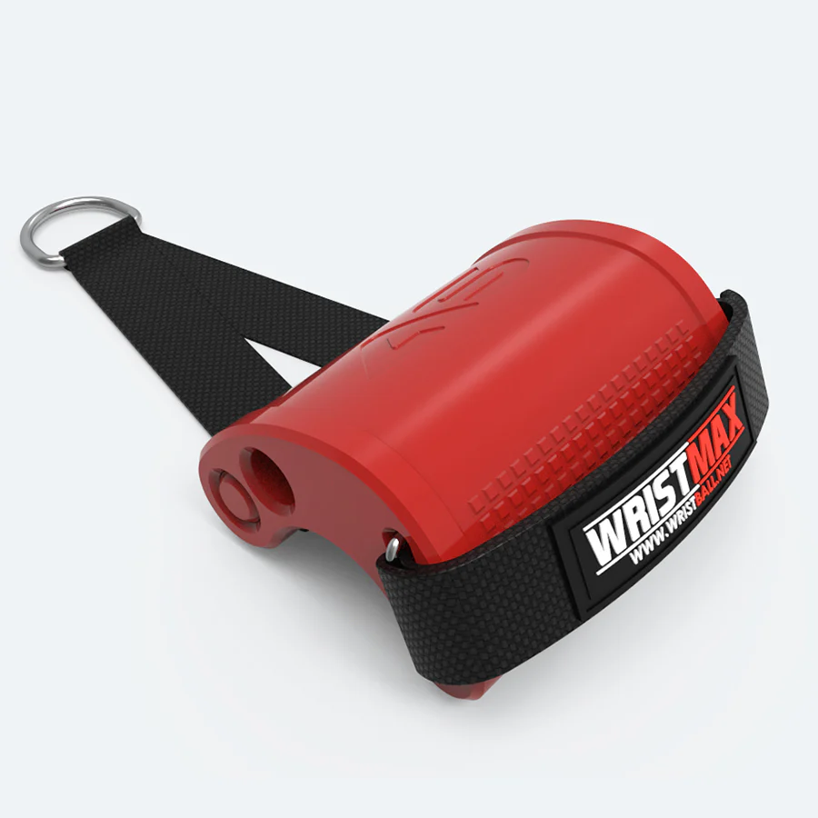
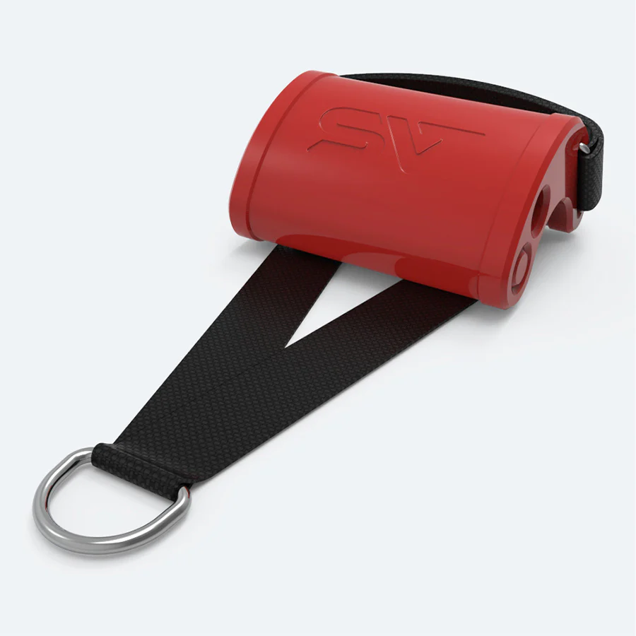
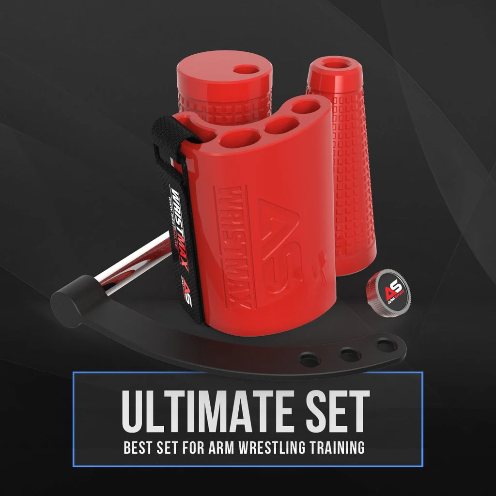
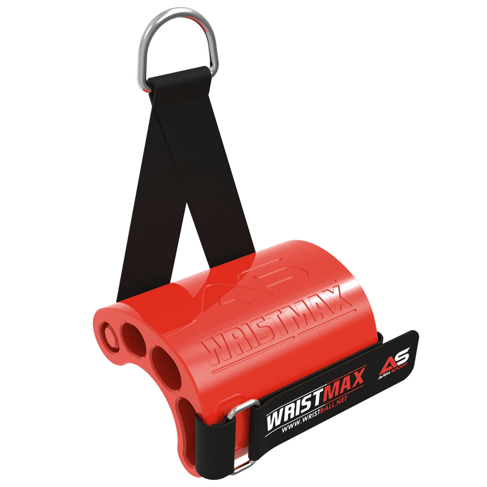

Agarre Antitoproll para Armwrestling
$29.99
Detalles del producto
¿Buscas mejorar tu rendimiento en armwrestling y ganar ventaja en tus enfrentamientos? Nuestro agarre antitoproll es la solución perfecta para ti. Diseñado específicamente para evitar el deslizamiento y ofrecer un control superior, este agarre te ayudará a mantener una posición sólida y segura durante tus combates.
Características destacables:
- Diseño Antideslizante: Proporciona un agarre firme y seguro, minimizando el riesgo de que tu oponente te gane en un toproll.
- Materiales de Alta Calidad: Fabricado con materiales duraderos y resistentes, garantizando una larga vida útil y un rendimiento óptimo.
- Ajuste Personalizable: Se adapta a diferentes tamaños de manos y preferencias de agarre, permitiendo una personalización total para tu comodidad.
- Fácil de usar: Se puede colocar y ajustar rápidamente en tu equipo de armwrestling, sin necesidad de herramientas adicionales.